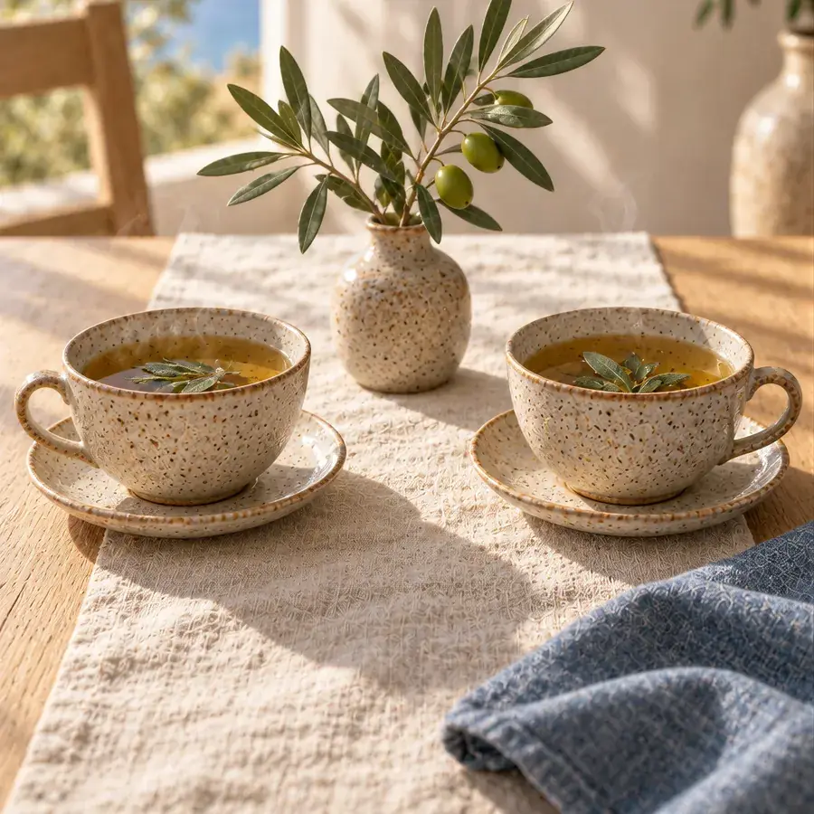

Αλεξάνδρα Μπανιά · Διαιτολόγος – Διατροφολόγος
Η διατροφή σας μπορεί να βελτιώσει τις εξετάσεις σας
Διατροφή για τη μεταβολική υγεία, με φαγητά που ήδη μαγειρεύετε. Ραντεβού δια ζώσης στη Σητεία ή online.
Υποψήφια MSc Κλινική Διατροφή, University of Essex

Στο ιατρείο ακούω συχνά
Ίσως το έχετε πει κι εσείς:
Πατήστε σε όποια σας ταιριάζει.
«Κάνω τα πάντα σωστά και δεν χάνω γραμμάριο.»Τι μπορεί να σημαίνει
Η ζυγαριά μετράει το συνολικό βάρος, όχι από τι αποτελείται. Το σώμα σας μπορεί να αλλάζει, με λιγότερο λίπος και περισσότερους μύες, πριν φανεί διαφορά στα κιλά. Με τη μέτρηση σύστασης σώματος βλέπουμε τι αλλάζει στην πραγματικότητα.
Διαβάστε: Η ζυγαριά δεν ξέρει από τι είστε φτιαγμένοι →«Ο γιατρός μου είπε να προσέξω το σάκχαρο, αλλά δεν μου εξήγησε τι να φάω.»Τι μπορεί να σημαίνει
Αν το σάκχαρο έχει αρχίσει να ανεβαίνει, τώρα είναι η κατάλληλη στιγμή να αλλάξετε κάποια πράγματα. Μικρές αλλαγές στο φαγητό και στην κίνηση μειώνουν τον κίνδυνο να εμφανιστεί διαβήτης, χωρίς να χρειαστεί να κόψετε τα φαγητά που αγαπάτε.
Διαβάστε: Προδιαβήτης: τι αλλάζω για να μειώσω τον κίνδυνο για διαβήτη →«Στις πέντε το απόγευμα θέλω οπωσδήποτε κάτι γλυκό.»Τι μπορεί να σημαίνει
Η λιγούρα για γλυκό το απόγευμα είναι πολύ συνηθισμένη. Μπορεί να έχει σχέση με το τι φάγατε το μεσημέρι, με το πόσες ώρες μείνατε χωρίς φαγητό ή με το πώς κοιμηθήκατε. Το εξετάζουμε μαζί, με βάση τα γεύματα και το πρόγραμμά σας.
Διαβάστε: Ινσουλινοαντίσταση: τι τρώω χωρίς να κόψω το ψωμί →«Από την εμμηνόπαυση παίρνω κιλά χωρίς να αλλάξω τίποτα.»Τι μπορεί να σημαίνει
Μετά την εμμηνόπαυση το λίπος μαζεύεται πιο εύκολα στην κοιλιά και η μυϊκή μάζα μειώνεται πιο εύκολα. Δεν φταίνε μόνο οι ορμόνες· ρόλο παίζουν και η ηλικία και η λιγότερη κίνηση. Αρκετή πρωτεΐνη σε κάθε γεύμα και ασκήσεις ενδυνάμωσης βοηθούν να διατηρήσετε τους μύες σας.
Διαβάστε: Εμμηνόπαυση: τι αλλάζει στο σώμα και τι βάζω στο πιάτο →Τέτοιες δυσκολίες σπάνια λύνονται με μια λίστα «τρώω, δεν τρώω». Πρώτα καταλαβαίνουμε μαζί τι συμβαίνει στο σώμα σας, με απλά λόγια και με βάση τις εξετάσεις σας. Μετά αλλάζουμε το πιάτο σας σιγά σιγά, με φαγητά που ήδη μαγειρεύετε.
Περισσότερα για μέναΜεταβολική υγεία
Σε τι μπορώ να σας βοηθήσω

Ινσουλινοαντίσταση & PCOS
Δεν κόβουμε το ψωμί· μαθαίνετε πόσο, πότε και με τι να το τρώτε.

Προδιαβήτης & διαβήτης
Υδατάνθρακες χωρίς φόβο, σε συμφωνία με την αγωγή σας.
Βάρος & σύσταση σώματος
Χάνετε λίπος ή παίρνετε κιλά, προστατεύοντας τους μύες σας.

Χοληστερίνη & τριγλυκερίδια
Το ελαιόλαδο μένει. Ψάχνουμε πού κρύβονται τα κορεσμένα.

Αγωγή GLP-1
Τρώτε λιγότερο, αλλά παίρνετε ό,τι χρειάζεστε.

Εμμηνόπαυση: μεταβολισμός & οστά
Πρωτεΐνη σε κάθε γεύμα, ασβέστιο από το τραπέζι.
Επίσης: Αγωγή GLP-1 · Εμμηνόπαυση · Θυρεοειδής · Αύξηση βάρους · Χρόνια νεφρική νόσος · Ευερέθιστο έντερο

Πώς δουλεύω
Μαζί με τον ιατρό σας
Την αγωγή σας την ορίζει ο ιατρός σας. Εγώ κοιτάζω το φαγητό, ώστε να τη βοηθάει και να μην τη δυσκολεύει. Αν το επιθυμείτε, έρχομαι σε επαφή μαζί του, για να είμαστε σε συνεννόηση.
Χωρίς ενοχές και χωρίς κήρυγμα. Αν μια εβδομάδα δεν πήγε όπως θέλατε, το συζητάμε και βρίσκουμε τι θα κάνει την επόμενη πιο εύκολη.

Πώς κλείνω ραντεβού
Πώς ξεκινάμε
- Επικοινωνία. Αν μένετε στη Σητεία, καλέστε στο ιατρείο EndoCare, στο 2843 025177. Για online, στείλτε μου email.
- Το πρώτο ραντεβού. Φέρτε τις τελευταίες σας εξετάσεις. Συζητάμε πώς τρώτε και πώς περνάει η μέρα σας.
- Συνεχίζουμε μαζί. Σε κάθε συνάντηση βλέπουμε τι πήγε καλά και τι θέλει αλλαγή.
Εξατομικευμένο διαιτολόγιο
Πρόγραμμα διατροφής με ελληνικά φαγητά, με βάση τις εξετάσεις και την καθημερινότητά σας.
Ταιριάζει αν θέλετε σαφή καθοδήγηση για το τι θα τρώτε μέσα στη μέρα.
Διατροφική συμβουλευτική
Βάζουμε μαζί στόχους και αλλάζουμε σταδιακά τις συνήθειες που θέλετε.
Ταιριάζει αν θέλετε να μάθετε να διαλέγετε μόνοι σας, χωρίς λίστες.
Δεν είστε σίγουροι; Απαντήστε σε 3 ερωτήσεις →
Δείτε τι περιλαμβάνει κάθε υπηρεσία →Για τιμές και ελεύθερες ώρες:
στη Σητεία, καλέστε στο ιατρείο, στο 2843 025177
για online, στείλτε μου email.
Άρθρα
Για να διαβάσετε με την ησυχία σας
 Νηστεία
ΝηστείαΝηστεία χωρίς στερήσεις: τι βάζω στο πιάτο
Η νηστεία φέρνει περισσότερα λαχανικά και όσπρια στο τραπέζι. Πώς καλύπτετε πρωτεΐνη, ασβέστιο και σίδηρο, με ιδέες για νηστίσιμα πιάτα και μια νηστίσιμη μέρα.
 Γιορτές
ΓιορτέςΓιορτές χωρίς ενοχές και χωρίς δίαιτα από τον Γενάρη
Πώς να χαρείτε το γιορτινό τραπέζι χωρίς φαγοπότι και χωρίς τιμωρία μετά: τι κάνετε πριν, στο τραπέζι, με τα γλυκά, με το «φάε λίγο ακόμα» και την επόμενη μέρα.
 Ινσουλινοαντίσταση
ΙνσουλινοαντίστασηΙνσουλινοαντίσταση: τι τρώω χωρίς να κόψω το ψωμί
Τι είναι η ινσουλινοαντίσταση με απλά λόγια, γιατί δεν χρειάζεται να κόψετε το ψωμί και πέντε αλλαγές στο πιάτο για την πρώτη εβδομάδα.
 Προδιαβήτης
ΠροδιαβήτηςΠροδιαβήτης: τι αλλάζω για να μειώσω τον κίνδυνο για διαβήτη
Τι σημαίνει ο προδιαβήτης, ποιες εξετάσεις τον δείχνουν και ποιες αλλαγές στο φαγητό και στην κίνηση μειώνουν τον κίνδυνο να γίνει διαβήτης.

Θέλετε να τα πούμε;
Χωρίς αυστηρές δίαιτες και χωρίς ενοχές, βρίσκουμε μαζί τον τρόπο να τρώτε που σας ταιριάζει.
Κλείστε ραντεβού